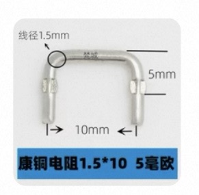

Système électromagnétique à réluctance
Modélisation, électronique de puissance et instrumentation.
J’ai assuré la conception et la réalisation de ce système à travers plusieurs versions successives, en associant simulation numérique, circuits imprimés, commande embarquée, mécanique et expérimentation.
Ansys Maxwell · Python / Optuna · PCB · IGBT · STM32 · ESP · SolidWorks
Voir les essais de l’IGBT DG340Travaux réalisés
Modélisation & optimisation
Étude électromagnétique sous Ansys Maxwell, automatisation des campagnes de simulation avec Python et optimisation multicritère avec Optuna pour comparer les configurations.
Électronique de puissance
Conception des PCB et d’une architecture de commutation à IGBT. Étude des transitoires, des surtensions, de l’isolation galvanique et des perturbations électriques.
Commande embarquée
Développement de la commande séquentielle sur STM32 et d’une interface de supervision sur ESP-01S ou ESP32 selon les versions ; intégration des capteurs.
Conception électromécanique
Modélisation sous SolidWorks, fabrication des bobinages, prototypage, assemblage et intégration des sous-ensembles mécaniques et électroniques.
Instrumentation expérimentale
Mise en place de mesures à l’oscilloscope et d’une instrumentation associant un radar à 24 GHz et des capteurs de courant à effet Hall pour caractériser le prototype.
Développement itératif
Analyse des résultats numériques et des observations expérimentales, révision des choix de conception et évaluation des modifications au fil des versions.
Carte de commande — 26R1
Vue du routage de la carte de commande embarquée, révision 26R1.

Essais de commutation de l’IGBT DG340
Ces essais portent sur le DG340X08T6B, un IGBT de puissance avec diode intégrée utilisé en électronique de traction électrique. StarPower indique une tension de blocage de 750 V et un courant nominal de 340 A.
Voies de l’oscilloscope
- C1 · jauneTension aux bornes du shunt, utilisée pour estimer le courant de la bobine
- C2 · violetTension grille-émetteur VGE (commande de grille)
- C3 · bleuTension collecteur-émetteur VCE
Courant de crête estimé
Icrête = |Ushunt| / Rshunt
Le shunt en constantan a une résistance nominale de 5 mΩ (0,005 Ω). La valeur absolue de la tension lue au curseur donne l’amplitude, quelle que soit la polarité de mesure.
Acquisition 1 Curseur Y2
|−14,00 V| / 0,005 Ω = 2 800 A
Acquisition 2 Curseur Y1
|−15,33 V| / 0,005 Ω = 3 066 A
Le calcul suppose que la tension relevée traduit principalement la chute de tension résistive dans le shunt.


Libellés des deux acquisitions en chinois et en français
- 功能
- Fonctions
- 显示
- Affichage
- 采样
- Acquisition
- 触发
- Déclenchement
- 光标
- Curseurs
- 测量
- Mesures
- 分析
- Analyse
- 峰峰值
- Valeur crête à crête
- 平均值
- Valeur moyenne
- 周期
- Période
- 顶端值
- Niveau haut
- 标准差
- Écart type
- 频率
- Fréquence
- 底端值
- Niveau bas
- 幅值
- Amplitude
- 下降过激
- Dépassement sur front descendant
- 上升过激
- Dépassement sur front montant
- 10-90%上升时间
- Temps de montée (10 à 90 %)
- 90-10%下降时间
- Temps de descente (90 à 10 %)
- 时基
- Base de temps
- 停止
- Arrêt
- 边沿
- Front
- 下降沿
- Front descendant
Source constructeur · fiche technique DG340X08T6B, StarPower Semiconductor, rév. A05. Voir la référence au catalogue.
Fabrication et essais
Photographies des étapes de réalisation et observations expérimentales.


Les photographies et oscillogrammes documentent les différentes versions et leurs essais. Les relevés sont des observations expérimentales ; ils ne constituent pas, à eux seuls, une qualification normalisée du système.